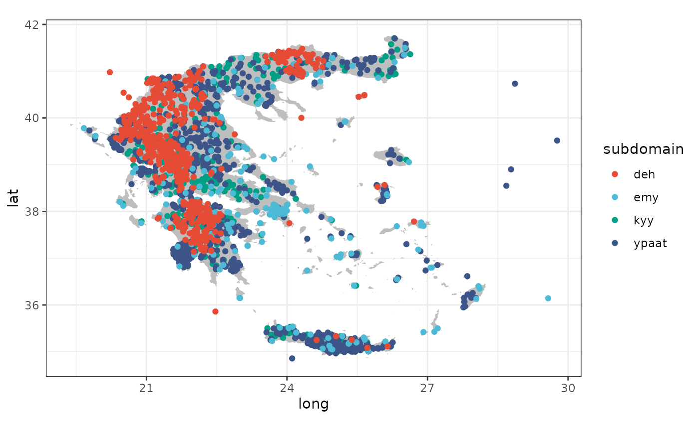
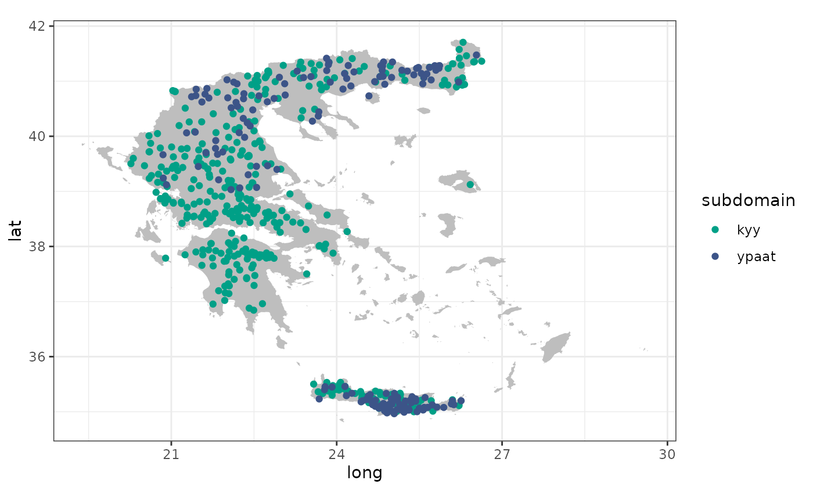

Using `hydroscoper`'s data
Konstantinos Vantas
2024-03-15
Source:vignettes/stations_with_data.Rmd
stations_with_data.RmdThis vignette shows how to use the package’s internal data sets.
Data sets
There are three data sets stored in the package. stations is comprised of the stations’ id, name, longitude, latitude, etc.
stations
#> # A tibble: 2,322 × 9
#> station_id name water_basin water_division owner longitude latitude altitude
#> <int> <chr> <chr> <chr> <chr> <dbl> <dbl> <dbl>
#> 1 501032 AG. … "KOURTALIO… GR13 min_… NA NA NA
#> 2 200246 GEPH… "ALPHEIOS … GR01 min_… 22.0 37.5 318
#> 3 200237 TROP… "ALPHEIOS … GR01 min_… 22.0 37.7 728.
#> 4 200231 BYTI… "ALPHEIOS … GR01 min_… 22.2 37.7 1011.
#> 5 200200 LYKO… "ALPHEIOS … GR01 min_… 22.2 37.9 758.
#> 6 200236 MEGA… "ALPHEIOS … GR01 min_… 22.1 37.4 429.
#> 7 200244 ODOG… "REMA CHOR… GR01 min_… 21.8 37.0 182.
#> 8 200204 TRIP… "ALPHEIOS … GR01 min_… 21.9 37.9 570.
#> 9 200198 KAST… "ALPHEIOS … GR01 min_… 22.0 37.9 792.
#> 10 200239 PERD… "ALPHEIOS … GR01 min_… 22.0 37.7 837.
#> # ℹ 2,312 more rows
#> # ℹ 1 more variable: subdomain <chr>timeseries of the time series’ id, the corresponding station, variable type, time step etc.
timeseries
#> # A tibble: 10,804 × 8
#> time_id station_id variable timestep units start_date end_date subdomain
#> <int> <int> <chr> <chr> <chr> <chr> <chr> <chr>
#> 1 2248 501049 temperature_… NA ° 2009-02-0… 2010-08… kyy
#> 2 430 200103 wind_directi… NA ° 1950-10-2… 1997-07… kyy
#> 3 905 200247 wind_directi… NA ° 1967-01-0… 1997-12… kyy
#> 4 2243 501058 temperature_… NA ° 1999-01-0… 2010-08… kyy
#> 5 438 200105 wind_directi… NA ° 1950-06-0… 1997-07… kyy
#> 6 553 200135 wind_directi… NA ° 1964-11-2… 1997-08… kyy
#> 7 966 200265 wind_directi… NA ° 1967-01-0… 1997-03… kyy
#> 8 775 200203 wind_directi… NA ° 1964-05-2… 1997-06… kyy
#> 9 2245 501046 temperature_… NA ° 2007-07-0… 2010-07… kyy
#> 10 247 200034 wind_directi… NA ° 1969-11-2… 1997-09… kyy
#> # ℹ 10,794 more rowsgreece_borders is a data-frame for use with the function geom_polygon from the ggplot2 package.
Stations location
stations and greece_borders can be used to create a map with all Hydroscope’s stations. Unfortunately, there is a number of them that have erroneous coordinates (over the sea and far from Greece). Also, there are 120 stations with missing coordinates.
ggplot() +
geom_polygon(data = greece_borders,
aes(long, lat, group = group),
fill = "grey",
color = NA) +
geom_point(data = stations,
aes(x = longitude, y = latitude, color = subdomain)) +
scale_color_manual(values=c("#E64B35FF", "#4DBBD5FF", "#00A087FF",
"#3C5488FF"))+
coord_fixed(ratio=1) +
theme_bw()
#> Warning: Removed 120 rows containing missing values or values outside the scale range
#> (`geom_point()`).
Stations with available time series
The location of the stations with time series available to download are presented at the following map.
stations_ts <- subset(stations, station_id %in% timeseries$station_id &
subdomain %in% c("kyy", "ypaat"))
ggplot() +
geom_polygon(data = greece_borders,
aes(long, lat, group = group),
fill = "grey",
color = NA) +
geom_point(data = stations_ts,
aes(x = longitude, y = latitude, color = subdomain)) +
scale_color_manual(values=c("#00A087FF", "#3C5488FF"))+
coord_fixed(ratio=1) +
theme_bw()
#> Warning: Removed 10 rows containing missing values or values outside the scale range
#> (`geom_point()`).
Although there is a large number of stations with available data, there is heterogeneity in the coverage of the country.